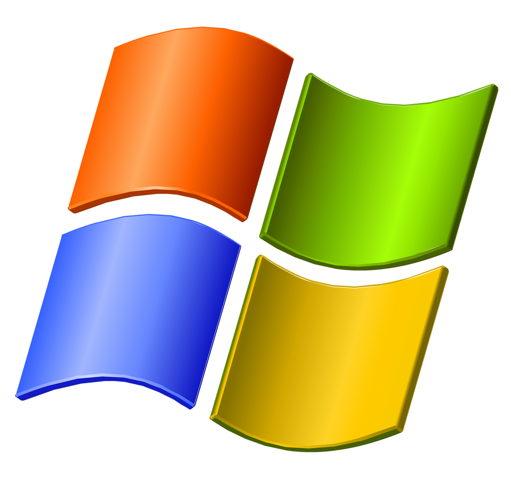
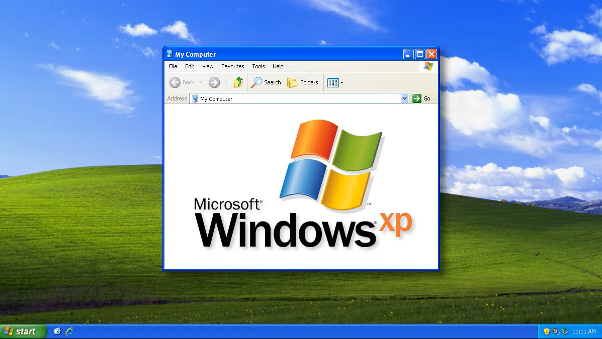

About
Released: 2001
Windows XP represented a major shift in how personal computers felt to everyday users. It was designed to be approachable, friendly, and visually engaging at a time when computers were becoming common in homes, schools, and offices.
XP combined the stability of earlier Windows systems with a more colorful and expressive interface, making it one of the most widely adopted versions of Windows.
Key Features

- The Luna Visual Style
- Brighter colors and rounded elements
- Improved stability and performance
- Easier navigation for new users
Windows XP focused on making technology feel less intimidating and more personal.
Design Philosophy
The design of Windows XP emphasized friendliness and clarity. Rounded shapes, soft gradients, and saturated colors were used to create a welcoming environment that encouraged exploration and ease of use.
This marked a move away from strictly neutral, professional interfaces toward more emotionally engaging design.
Impact
Windows XP remained widely used for more than a decade. Many users were reluctant to upgrade due to its reliability and familiar design, making it one of the longest–supported Windows versions in history.
